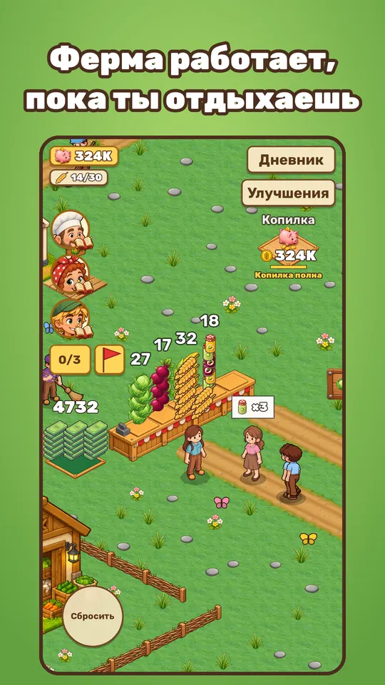
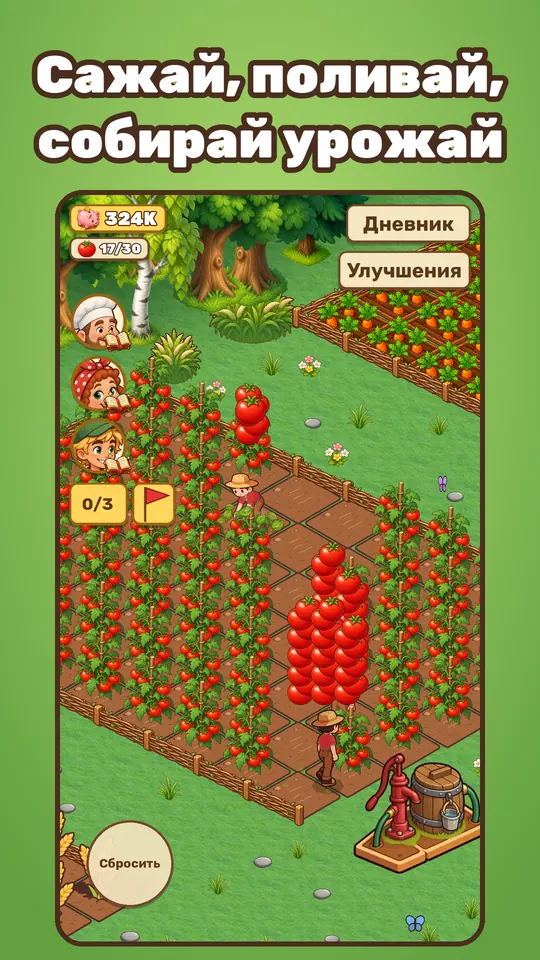
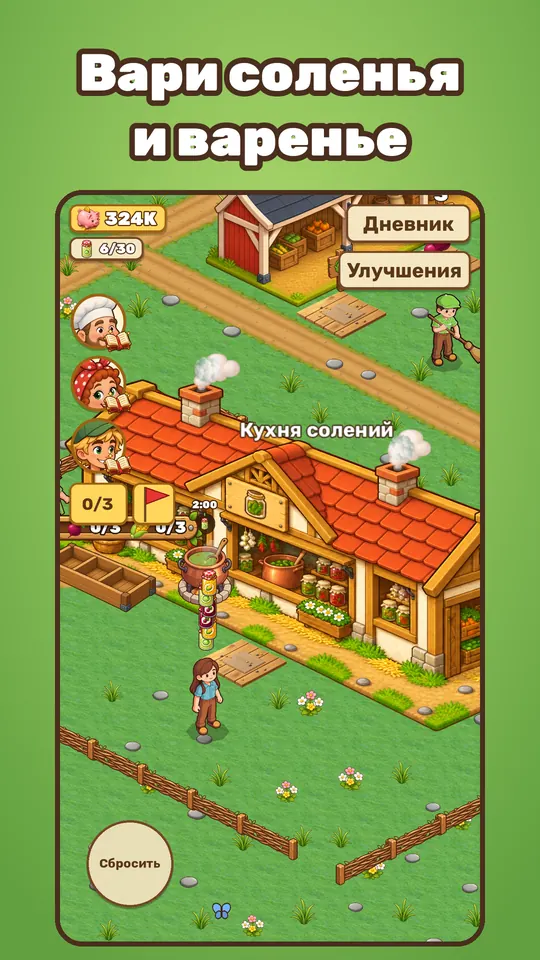
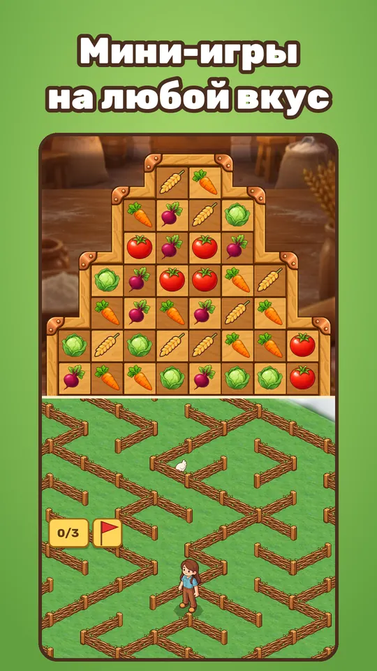

Gartenwerk Games · независимый разработчик игр из Германии
Garten: уютная ферма и пекарня

Garten: уютная ферма и пекарня — спокойная игра про ферму с пекарней для Android. Бабушка переехала к морю и оставила тебе заросшую ферму: сажай и собирай урожай, помогай пекарю, вари соленья и варенье и нанимай помощников — ферма работает, пока ты отдыхаешь. Играется без интернета, без доната: покупок в игре нет, реклама — только ролики за награду по желанию.
Скачать в Google Play · бесплатно, без покупок в игре
Что делать в Garten
- Сажай, поливай и собирай урожай — от пшеницы до арбузов — и неси товар на кассы.
- Нанимай фермеров и носильщиков: ферма приносит доход, даже когда игра закрыта.
- Помогай пекарю в мини-игре «три в ряд», вари соленья и варенье, проходи лабиринты в тумане.
- Знакомься с соседями — у каждого своя история — и открывай новые страницы бабушкиного дневника.
- Короткие заходы по 5–10 минут и цели дня. Без боёв и без спешки.
Скриншоты




Честно об игре
- Игра-ферма без интернета: играть можно офлайн.
- Без доната: покупок в игре нет. Реклама — только ролики за награду, по желанию.
- Достижения и сохранение в облаке через Google Play Игры.
- Языки: русский, английский, немецкий.
- Игру делает один человек в Германии.